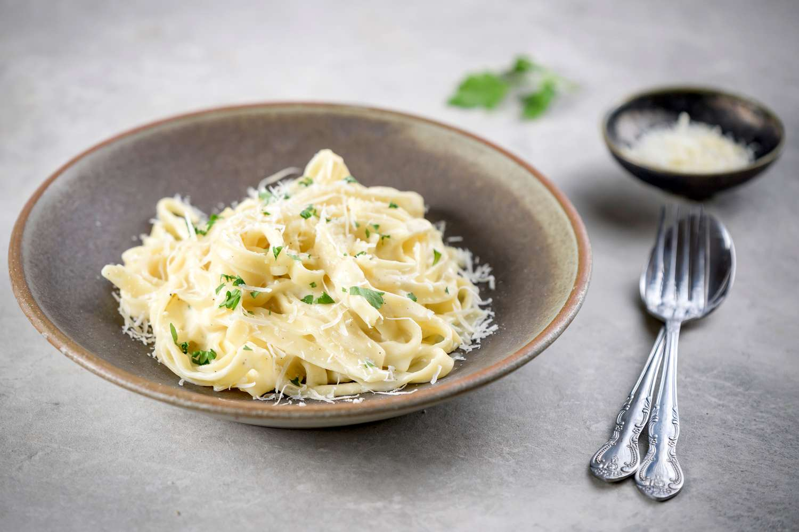
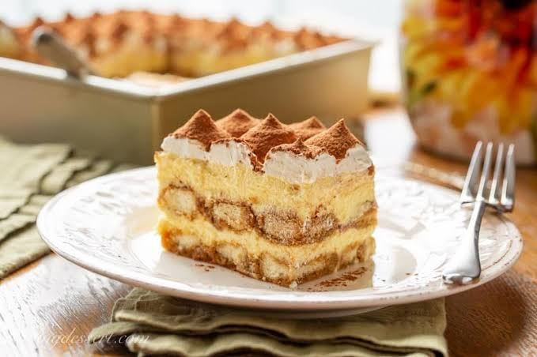

Hey everyone, I'm Amin! Back in the day, I used to work as an Italian restaurant chef. Today, I wanted to share some of my all-time favorite recipes with you!

To make a classic Fettuccine Alfredo, start by boiling fettuccine pasta
in
salted water until al dente, reserving a bit of pasta water before
draining.
In a large skillet over medium heat, melt a stick of unsalted butter
and
sauté minced garlic for a minute until fragrant. Pour in one cup of
heavy
cream and simmer for 3 to 4 minutes until thickened, then turn heat to
low
and whisk in one and a half cups of freshly grated Parmesan cheese
until
smooth and creamy. Season with salt and black pepper to taste, toss
pasta
directly into the sauce until coated, and serve hot with fresh parsley.

To make a classic Tiramisu, start by whisking egg yolks and sugar
together
until pale and creamy, then fold in mascarpone cheese until smooth. In
a
separate bowl, whip heavy cream to stiff peaks and gently fold it into
the
mascarpone mixture. Quickly dip Savoiardi ladyfingers into cooled
espresso
sweetened with a touch of sugar, lining them tightly in a baking dish.
Spread half of the cream mixture evenly over the biscuits, repeat with
a
second layer of dipped ladyfingers and cream, then cover and chill in
the
refrigerator for at least 6 hours. Generously dust the top with
unsweetened
cocoa powder right before serving for a rich, authentic Italian finish.
| Dish | Serving Size | Calories | Protein | Total Fat | Carbs | Fiber | Sugar | Sodium | Calcium |
|---|---|---|---|---|---|---|---|---|---|
| Classic Fettuccine Alfredo | 1 serving (250g) | 580 kcal | 18g | 36g | 48g | 2g | 3g | 620mg | 350mg |
| Classic Tiramisu | 1 slice (150g) | 420 kcal | 7g | 26g | 38g | 1g | 24g | 140mg | 110mg |